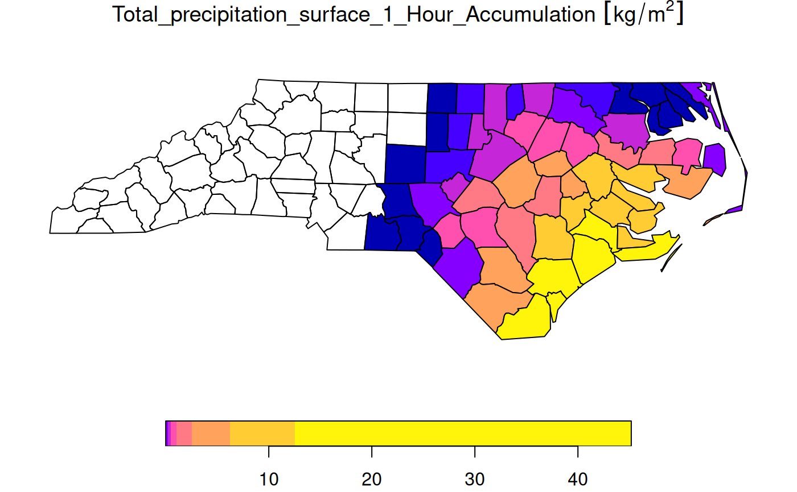

spatially or temporally aggregate stars object, returning a data cube with lower spatial or temporal resolution
# S3 method for stars aggregate( x, by, FUN, ..., drop = FALSE, join = st_intersects, as_points = any(st_dimension(by) == 2, na.rm = TRUE), rightmost.closed = FALSE, left.open = FALSE, exact = FALSE )
| x | object of class |
|---|---|
| by | object of class |
| FUN | aggregation function, such as |
| ... | arguments passed on to |
| drop | logical; ignored |
| join | function; function used to find matches of |
| as_points | see st_as_sf: shall raster pixels be taken as points, or small square polygons? |
| rightmost.closed | see findInterval |
| left.open | logical; used for time intervals, see findInterval and cut.POSIXt |
| exact | logical; if |
# aggregate time dimension in format Date tif = system.file("tif/L7_ETMs.tif", package = "stars") t1 = as.Date("2018-07-31") x = read_stars(c(tif, tif, tif, tif), along = list(time = c(t1, t1+1, t1+2, t1+3)))[,1:30,1:30] st_get_dimension_values(x, "time")#> [1] "2018-07-31" "2018-08-01" "2018-08-02" "2018-08-03"x_agg_time = aggregate(x, by = t1 + c(0, 2, 4), FUN = max) # aggregate time dimension in format Date - interval by_t = "2 days" x_agg_time2 = aggregate(x, by = by_t, FUN = max) st_get_dimension_values(x_agg_time2, "time")#> [1] "2018-07-31" "2018-08-02"x_agg_time - x_agg_time2#> Warning: longer object length is not a multiple of shorter object length#> stars object with 4 dimensions and 1 attribute #> attribute(s): #> L7_ETMs.tif #> Min. :-109.000 #> 1st Qu.: -13.000 #> Median : 3.000 #> Mean : 1.896 #> 3rd Qu.: 18.000 #> Max. : 90.000 #> NA's :5400 #> dimension(s): #> from to offset delta refsys point values x/y #> time 1 3 2018-07-31 2 days Date NA NULL #> x 1 30 288776 28.5 PROJCS["UTM Zone 25, Sout... FALSE NULL [x] #> y 1 30 9120761 -28.5 PROJCS["UTM Zone 25, Sout... FALSE NULL [y] #> band 1 6 NA NA NA NA NULL# aggregate time dimension in format POSIXct x = st_set_dimensions(x, 4, values = as.POSIXct(c("2018-07-31", "2018-08-01", "2018-08-02", "2018-08-03")), names = "time") by_t = as.POSIXct(c("2018-07-31", "2018-08-02")) x_agg_posix = aggregate(x, by = by_t, FUN = max) st_get_dimension_values(x_agg_posix, "time")#> [1] "2018-07-31 UTC" "2018-08-02 UTC"x_agg_time - x_agg_posix#> Warning: longer object length is not a multiple of shorter object length#> stars object with 4 dimensions and 1 attribute #> attribute(s): #> L7_ETMs.tif #> Min. :-104.000 #> 1st Qu.: -13.000 #> Median : 3.000 #> Mean : 1.944 #> 3rd Qu.: 18.000 #> Max. : 90.000 #> NA's :10800 #> dimension(s): #> from to offset delta refsys point values x/y #> time 1 3 2018-07-31 2 days Date NA NULL #> x 1 30 288776 28.5 PROJCS["UTM Zone 25, Sout... FALSE NULL [x] #> y 1 30 9120761 -28.5 PROJCS["UTM Zone 25, Sout... FALSE NULL [y] #> band 1 6 NA NA NA NA NULL#> stars object with 4 dimensions and 1 attribute #> attribute(s): #> L7_ETMs.tif #> Min. : 17.00 #> 1st Qu.: 43.00 #> Median : 58.00 #> Mean : 57.59 #> 3rd Qu.: 70.00 #> Max. :145.00 #> dimension(s): #> from to offset delta refsys point values #> time 1 2 2018-07-31 UTC 2 days POSIXct NA NULL #> x 1 30 288776 28.5 PROJCS["UTM Zone 25, Sout... FALSE NULL #> y 1 30 9120761 -28.5 PROJCS["UTM Zone 25, Sout... FALSE NULL #> band 1 6 NA NA NA NA NULL #> x/y #> time #> x [x] #> y [y] #> band# Spatial aggregation, see https://github.com/r-spatial/stars/issues/299 prec_file = system.file("nc/test_stageiv_xyt.nc", package = "stars") prec = read_ncdf(prec_file, curvilinear = c("lon", "lat"))#>#> #>#> #> #>#> Warning: bounds for time seem to be reversed; reverting themprec_slice = dplyr::slice(prec, index = 17, along = "time") nc = sf::read_sf(system.file("gpkg/nc.gpkg", package = "sf"), "nc.gpkg") nc = st_transform(nc, st_crs(prec_slice)) agg = aggregate(prec_slice, st_geometry(nc), mean)#>#>plot(agg)